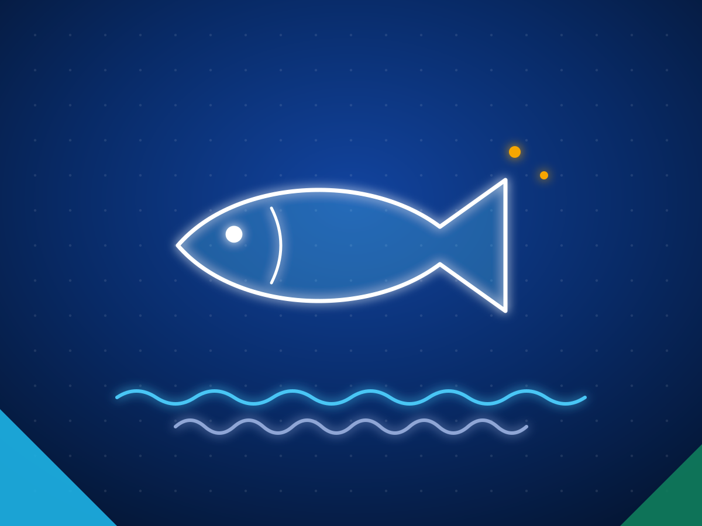

Seafood exporters in Sri Lanka: yellowfin tuna, swordfish, shrimp and crab
Sri Lanka exported US$240.19 million of seafood in 2025, led by yellowfin tuna and swordfish, fresh, chilled and frozen, with shrimp, crab, lobster and sea cucumber. The EU lifted its ban on Sri Lankan fishery exports in June 2016, and the Export Development Board counts 55 EU approved processing plants. The largest markets in 2024 were the US, Germany, the UK, France, Italy and the Netherlands. Supply follows the monsoon and yellowfin is under an Indian Ocean catch limit, so agree volumes and a season plan with your supplier.
Last reviewed 27 October 2026. Sources are linked next to each fact. We do not name buyers.

- US$240.19M
- seafood exports in 2025, up 3.09%
- 55
- EU approved processing plants
- US$180.81M
- January to September 2026, down 2.03%
Sources: Export Development Board, 2025 export performance and January to September 2026 (via Newswire).
Seafood from Sri Lanka at a glance
| Main products | Yellowfin tuna and swordfish, fresh, chilled and frozen; tuna loins and fillets; shrimp, crab, lobster and sea cucumber |
|---|---|
| Largest markets in 2024 | US, Germany, UK, France, Italy, Netherlands, Hong Kong, China, Canada, Japan |
| Documents per shipment | EU health certificate and catch certificate; export licence for sea cucumber and lobster |
| Certificates to ask for | EU approval number, HACCP, BRCGS or IFS Food, MSC or Friend of Sea where your market needs it |
| Watch for | Monsoon seasonality and the yellowfin catch limit |
What Sri Lankan exporters supply
| Product | HS code |
|---|---|
| Yellowfin tuna, fresh or chilled | 0302.32 |
| Yellowfin tuna, frozen | 0303.42 |
| Swordfish, fresh or chilled | 0302.47 |
| Swordfish, frozen | 0303.57 |
| Tuna loins and fish fillets | 0304 |
| Shrimps and prawns, frozen | 0306.17 |
| Crabs, live, fresh or chilled | 0306.33 |
| Crabs, frozen | 0306.14 |
| Rock lobster, frozen | 0306.11 |
| Sea cucumber, frozen | 0308.12 |
| Prepared crustaceans and molluscs | 1605 |
HS codes at heading or six digit level. Confirm the national tariff line in your market with your customs broker.
Also traded as: Ahi tuna, tuna loins, tuna steaks, mud crab, spiny lobster, beche de mer.
Why buyers source seafood from Sri Lanka
- The EU completely lifted its ban on Sri Lankan fishery exports in June 2016. It had been imposed in January 2015 over illegal, unreported and unregulated fishing. Ada Derana
- The Export Development Board counts 55 EU approved fish processing plants in Sri Lanka. EDB fishery report 2025
- Yellowfin tuna made up 36% of Sri Lanka's large pelagic catch of 87,546 tonnes in 2021, landed by more than 5,000 multi day boats. IOTC national report
- Sri Lanka's exclusive economic zone covers 517,000 square kilometres, served by 25 major fishery harbours and 106 ice plants. EDB fishery report 2025
- Fish fillets were the largest export line in 2024 at US$75.07 million, followed by fresh and chilled fish including tuna and swordfish at US$49.86 million. EDB fishery report 2025
- Fresh and chilled seafood ships in gel ice packs, foam boxes and cartons, and in modified atmosphere and vacuum packs. EDB
Certifications and standards to ask for
- EU approved establishment. Only plants on the EU list can ship to the EU. Sri Lanka's Department of Fisheries and Aquatic Resources keeps the list and certifies exports.
- Catch certificate. Required for wild caught fish entering the EU under the regulation on illegal, unreported and unregulated fishing.
- Health certificate and export licences. Issued by the Department of Fisheries and Aquatic Resources, including licences for sea cucumber and lobster.
- HACCP. The baseline. The Export Development Board says exporters follow HACCP and Friend of Sea requirements; ask for the current certificate.
- BRCGS or IFS Food, MSC or ASC. European importers increasingly expect a recognised food safety scheme and a sustainability label. Check which ones the plant holds.
- US FDA seafood HACCP and SIMP. For the US, the importer verifies HACCP compliance and reports chain of custody data for tuna, swordfish, shrimp and sea cucumber.
Know this before you buy
- Supply is seasonal. Fishing inside the exclusive economic zone follows the monsoon, with better catches just before and after it. IOTC national report
- Yellowfin tuna is under an Indian Ocean Tuna Commission catch limit: 32,958 tonnes for Sri Lanka in 2025. IOTC
- Fresh fish for Europe is time and temperature critical. A market study advises catching no more than three days before the flight and warns that fish arriving above 5°C may be rejected. SIPPO seafood study
- Three teatfish sea cucumber species are listed on CITES Appendix II. Confirm the species before you contract sea cucumber. CITES listing
Questions to ask a Sri Lankan seafood exporter
- Is the plant on the EU approved list, and what is its approval number?
- Which species, product forms and sizes can you supply each month, and in which season?
- Can you provide catch certificates and traceability to the vessel for every lot?
- Which food safety and sustainability certificates do you hold, and for which site?
- How do you hold the cold chain from landing to the airport, and what temperatures do you log?
How we help you source seafood
Tell us the spec
Product, grade, quantity, packing, destination port, the certificates you need and when you need the first shipment.
We shortlist exporters
We match you with Sri Lankan exporters who make that product and already ship to markets like yours, and check them before we introduce them.
You deal direct
Quotes and samples come from the exporters themselves and you choose. We stay on hand for the factory visit, the first order and the first shipment.
Tell us what you need to source
Send the product, grade, quantity, destination and the certificates you need. We reply within two working days with Sri Lankan exporters who make it and already ship to markets like yours.
Common questions
Can Sri Lankan seafood be shipped to the EU?
Yes. The EU lifted its January 2015 ban on Sri Lankan fishery exports in June 2016. Shipments must come from an EU approved establishment, of which the Export Development Board counts 55, with an EU health certificate and, for wild caught fish, a catch certificate.
Which seafood does Sri Lanka export most?
By value in 2024: fish fillets including tuna loins (US$75.07 million), fresh and chilled fish such as tuna and swordfish (US$49.86 million), frozen fish (US$39.50 million) and crustaceans (US$36.23 million), according to the Export Development Board. Seafood exports totalled US$240.19 million in 2025.
Which countries buy Sri Lankan seafood?
In 2024 the top markets for edible fish products were the US, Germany, the UK, France, Italy, the Netherlands, Hong Kong, China, Canada and Japan. Germany, France, Italy and the Netherlands together took about 36% of the value.
Is yellowfin tuna available all year?
Boats fish through the year, but catches inside Sri Lanka's waters follow the monsoon and yellowfin is under a catch limit of 32,958 tonnes for 2025. Agree monthly volumes and a seasonal plan with your supplier.
Other products from Sri Lanka
- Apparel and textiles
- Ceylon tea
- Ceylon cinnamon
- Coconut food products
- Coco peat and coir
- Coconut shell activated carbon
- Industrial and solid tyres
- Rubber gloves and rubber products
- Electrical and electronics
- Spices and essential oils
- Processed food and beverages
- Gems and jewellery
- Light engineering and machinery
- Boats and marine
- Fruits and vegetables
- Cut foliage and live plants
- Ornamental fish
- Ceramics and porcelain
- Printing and packaging
- Wood products and furniture
- Footwear and leather goods
- Graphite and minerals
- Ayurveda and herbal products
See also: All Sri Lankan export categories · How to import from Sri Lanka · Request a quote · For Sri Lankan exporters